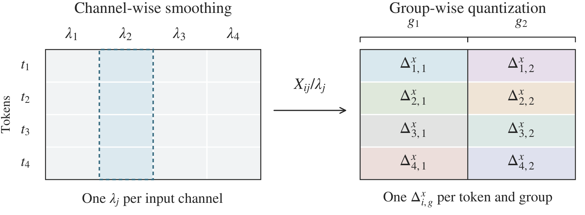
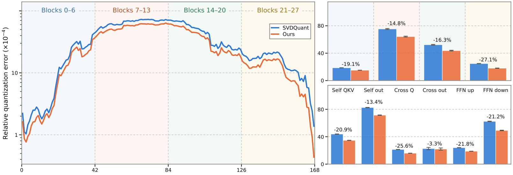
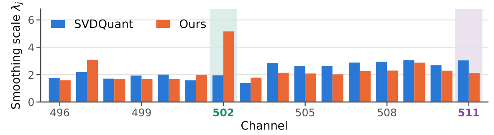
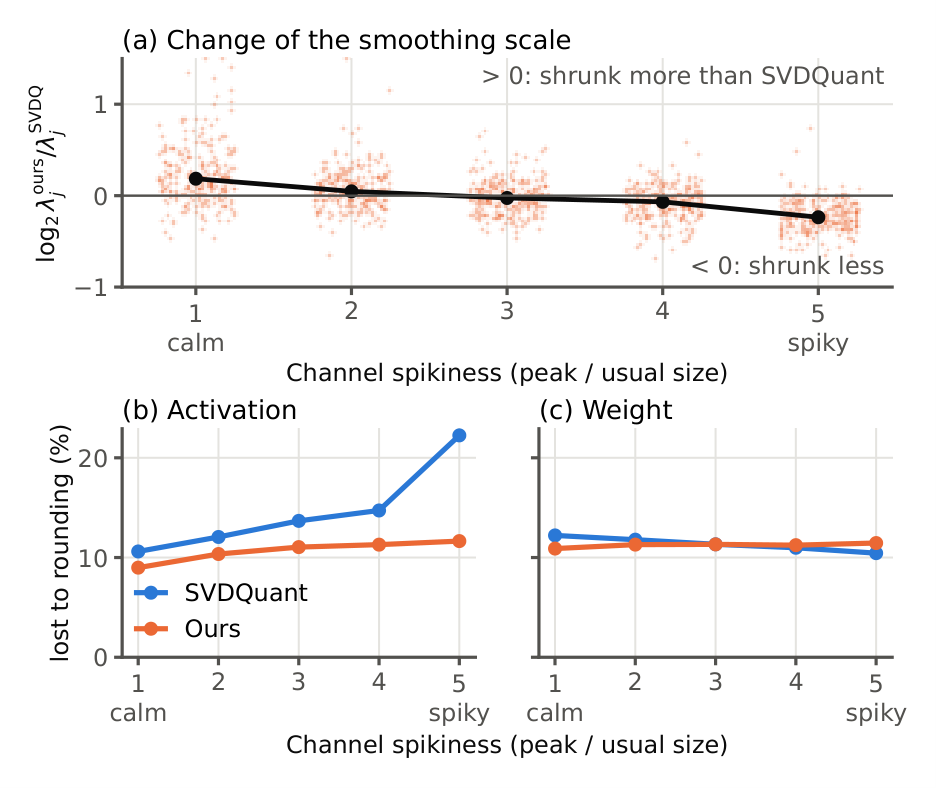

Abstract
Smoothing enables low-bit quantization of diffusion transformers by scaling down each input activation channel while scaling up its corresponding weights. Existing methods determine the smoothing scale of each channel independently, using only that channel's statistics. Under group-wise quantization, however, multiple channels share a quantization scale, so rescaling one channel can change the quantization error of others in the same group. To account for this dependency, we formulate the minimization of the expected squared output quantization error as a fixed-point problem over the smoothing scales of all channels within each group. We then develop a training-free iterative algorithm that refines these scales jointly. The resulting scales consistently reduce output quantization error relative to existing heuristics across layers with different functions and at different block depths. This also translates to improved generation quality over existing methods across multiple model architectures and benchmarks for both image and video generation.
Method
Smoothing under group-wise quantization
Smoothing divides each input channel $j$ of a linear layer by a scale $\lambda_j$ and multiplies the matching row of the weight by the same scale, so the full-precision output is unchanged. Low-bit quantizers, however, split the channels into groups of 64 that share one quantization scale, set by the largest value in the group. Rescaling one channel therefore changes the quantization scale, and the error, of every other channel in its group.

Tap a figure to open it at full size.
The expected output error couples the channels of a group
Treating rounding errors as independent noise of variance $\Delta^2/12$, the expected squared output error splits into a sum over groups,
where $S_g^w=\sum_{j\in g}\nu_j\lambda_j^2$ and $S_g^x=\sum_{j\in g}\mu_j/\lambda_j^2$ are the energies of the smoothed weights and activations. The maxima in $A_g$ and $B_g$ depend on all scales of the group at once. For each channel, $c_j$ and $d_j$ collect the activation and weight energy on the tokens and output channels where it is the largest of its group, i.e. where it sets the quantization scale.
A fixed-point equation for the smoothing scales
Setting the derivative of $\mathcal E$ to zero gives one condition per channel. Every stationary smoothing scale satisfies
The right-hand side depends on all scales of the group, so the conditions are coupled and form a fixed-point equation $\lambda^\star=F(\lambda^\star)$. Compared with per-channel heuristics, the extra terms $c_j$ and $d_j$ account for how often a channel sets the shared quantization scale. A channel that is the largest of its group on most tokens is shrunk more, which refines the quantization step for all other channels of the group.
Training-free iterative algorithm
- Start from the smoothing scale of SVDQuant.
- Find the scale-setting channels of every token and output channel under the current scales, and compute $c_j$ and $d_j$.
- Update all scales at once with log-domain damping, $\lambda\leftarrow\lambda^{1-\eta}F(\lambda)^{\eta}$ with $\eta=0.5$, and repeat.
- Keep the best iterate, measured by quantizing the layer exactly as in deployment, including the low-rank branch, on held-out prompts.
Damping matters because the target $F(\lambda)$ is computed with the scale-setting channels of the current iterate. Jumping all the way to it makes many tokens change their scale-setting channel, so the target no longer holds and the iterates oscillate. Moving only part of the way keeps the target accurate and the iterates settle. The smoothing scales are folded into the weights and the preceding layer as in SVDQuant, so the quantized model, its kernels and its latency are unchanged. The only extra cost is a one-time calibration.
What changes

Tap a figure to open it at full size.




Results
Text-to-image
Scroll sideways for all columns →
| Method | CLIP-IQA ↑ | CLIP ↑ | FID-GT ↓ | IR ↑ | FID-O ↓ | LPIPS ↓ | PSNR ↑ | SSIM ↑ |
|---|---|---|---|---|---|---|---|---|
| PixArt-Σ (20 steps) | ||||||||
| FP16 | .943 | 26.80 | 16.58 | .952 | – | – | – | – |
| SVDQuant | .926 | 26.57 | 18.84 | .879 | 15.78 | .322 | 17.56 | .653 |
| Ours | .931 | 26.60 | 18.02 | .892 | 14.10 | .306 | 17.84 | .663 |
| FLUX.1-schnell (4 steps) | ||||||||
| BF16 | .937 | 26.65 | 19.28 | .963 | – | – | – | – |
| SVDQuant | .936 | 26.44 | 18.42 | .946 | 7.04 | .252 | 18.42 | .729 |
| Ours | .937 | 26.46 | 18.30 | .953 | 6.86 | .245 | 18.58 | .734 |
| SANA-1.6B (20 steps) | ||||||||
| BF16 | .940 | 27.28 | 15.95 | 1.098 | – | – | – | – |
| SVDQuant | .934 | 27.26 | 16.03 | 1.078 | 6.79 | .201 | 18.68 | .696 |
| Ours | .934 | 27.26 | 16.03 | 1.077 | 6.63 | .198 | 18.70 | .699 |
Scroll sideways for all columns →
| Method | CLIP-IQA ↑ | CLIP ↑ | FID-GT ↓ | IR ↑ | FID-O ↓ | LPIPS ↓ | PSNR ↑ | SSIM ↑ |
|---|---|---|---|---|---|---|---|---|
| PixArt-Σ (20 steps) | ||||||||
| FP16 | .967 | 26.14 | 24.78 | .978 | – | – | – | – |
| SVDQuant | .948 | 26.09 | 25.83 | .936 | 15.71 | .344 | 16.55 | .580 |
| Ours | .949 | 26.09 | 24.99 | .941 | 13.74 | .329 | 16.68 | .590 |
| FLUX.1-schnell (4 steps) | ||||||||
| BF16 | .930 | 26.22 | 20.85 | .984 | – | – | – | – |
| SVDQuant | .930 | 26.15 | 20.14 | .979 | 6.67 | .259 | 17.32 | .687 |
| Ours | .931 | 26.15 | 20.02 | .987 | 6.47 | .251 | 17.45 | .693 |
| SANA-1.6B (20 steps) | ||||||||
| BF16 | .967 | 26.69 | 22.89 | 1.065 | – | – | – | – |
| SVDQuant | .962 | 26.67 | 21.62 | 1.053 | 6.66 | .220 | 17.10 | .635 |
| Ours | .963 | 26.72 | 21.69 | 1.058 | 6.51 | .214 | 17.24 | .642 |
Text-to-video
Scroll sideways for all columns →
| Metric | Wan 2.1 T2V-1.3B (W4A4) | Open-Sora 1.0 (W4A8) | ||||
|---|---|---|---|---|---|---|
| BF16 | SVDQuant | Ours | FP16 | ViDiT-Q | ViDiT-Q + Ours | |
| VBench (%) | ||||||
| Imaging quality ↑ | 65.13 | 64.28 | 63.60 | 63.81 | 58.63 | 60.62 |
| Aesthetic quality ↑ | 60.96 | 55.00 | 55.84 | 58.36 | 53.49 | 54.45 |
| Motion smoothness ↑ | 97.27 | 96.80 | 97.07 | 95.88 | 94.98 | 95.40 |
| Dynamic degree ↑ | 66.67 | 55.56 | 56.94 | 56.94 | 41.67 | 45.83 |
| Background consistency ↑ | 95.57 | 94.15 | 94.62 | 96.02 | 95.62 | 95.48 |
| Subject consistency ↑ | 92.38 | 91.21 | 91.69 | 91.33 | 87.31 | 89.04 |
| Scene ↑ | 30.01 | 20.42 | 25.65 | 47.75 | 28.56 | 39.24 |
| Overall consistency ↑ | 24.90 | 24.37 | 24.23 | 26.37 | 23.44 | 25.55 |
| Similarity to full precision | ||||||
| LPIPS ↓ | – | 0.400 | 0.374 | – | 0.516 | 0.450 |
| SSIM ↑ | – | 0.557 | 0.581 | – | 0.524 | 0.566 |
| PSNR ↑ | – | 16.45 | 16.54 | – | 15.55 | 16.52 |
| FVD ↓ | – | 638.2 | 535.9 | – | 556.9 | 429.9 |
Gallery
Full-resolution examples. Original is the full-precision model, and all methods use the same prompt and seed (and the same frames for videos). Click any image or video to enlarge it, then press 1, 2 and 3 to switch methods at the same position.